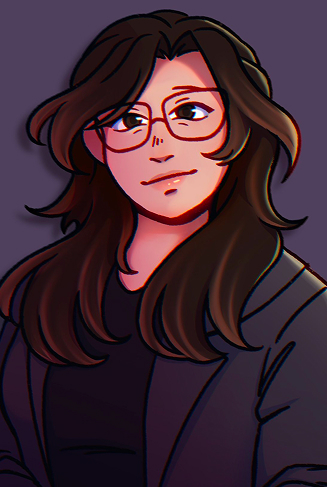
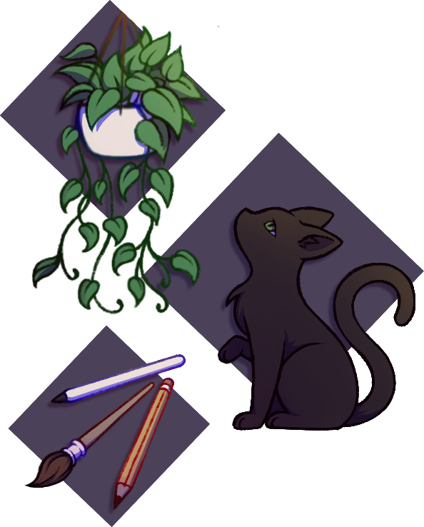

About Me
/AN-uh-LEE-see-uh/
Dedicated to the world of art & design.
With 4+ years of freelance experience in graphic design & illustration,
I love helping bring ideas to life, from concept to polish!

/AN-uh-LEE-see-uh/
Dedicated to the world of art & design.
With 4+ years of freelance experience in graphic design & illustration,
I love helping bring ideas to life, from concept to polish!


Santa Fe Highschool | 2020 - 2024
Collage of the Mainland | 2022 - Present
Collage of the Mainland | 2024 - Present
2024-Present
Badelynge Review | Teaxs City, TX
Jan 2023-Present
Independent | Remote
2022-Present
Badelynge Review | Teaxs City, TX
2021-Present
Self-employed | Remote
Apr 2020-Oct 2021
Subway | Santa Fe, TX
2022-2023
Collage of the Mainland Literary Journal | Teaxs City, TX
2023-2024
Collage of the Mainland Literary Journal | Teaxs City, TX
2024-2025
Collage of the Mainland Literary & Visual Arts Journal | Teaxs City, TX